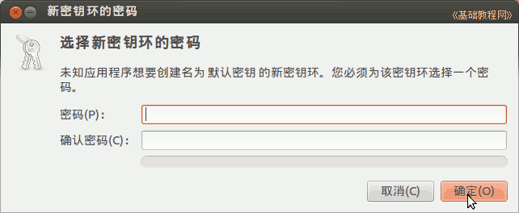
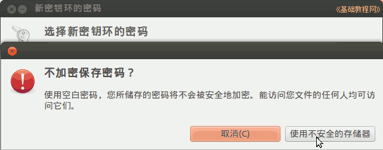
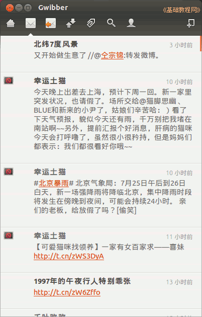
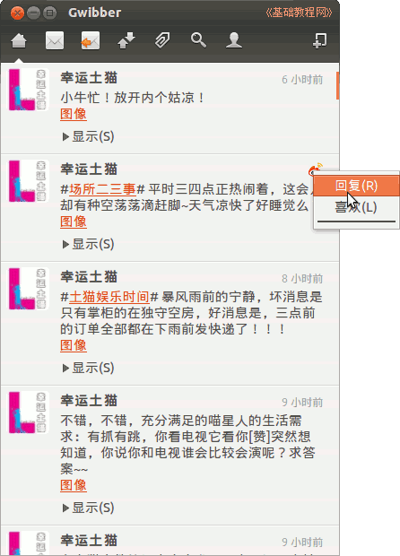
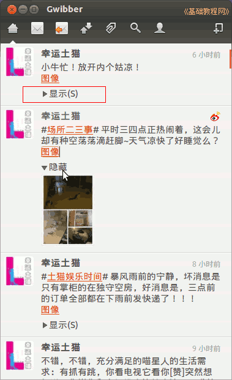
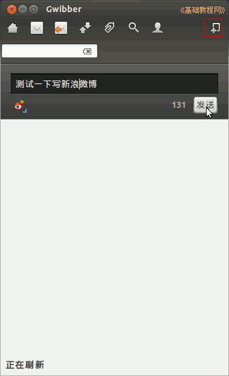

Ubuntu 入门操作指南
作者：TeliuTe 来源：基础教程网
四十八、Gwibber 社交客户端 返回目录 下一课使用它可以上自己的各个微博，像新浪、搜狐、Twitter等；
1、Gwibber 社交客户端
1）在软件中心或新立得中搜索安装 gwibber-service-sina 和 gwibber-service-sohu，详细操作请参阅 第10课 或 第15课；
2）点击主按钮，在搜索中输入 gwibber ，打开程序，或者依次点“主按钮、所有程序、过滤结果、互联网、Gwibber 社交客户端”；
3）先出来一个添加帐号面板，在右上角点击“Twitter”下拉列表，选择 Sina 或 Sohu，然后点下面的“添加”按钮；
4）在出来的认证面板中，点右上边的“认证”按钮；
5）在右下边输入自己的新浪帐号，点“登录并授权”；
6）出来一个登录密钥环，如果想自动登录，就不设置密码，直接点“确定”和“使用不安全的存储器”；


7）在帐号面板的左边就成功添加了帐号，点下边的加号“+”，可以继续添加帐号，这个面板以后可以点菜单“编辑－帐号”重新打开；
8）关闭帐号面板，主面板上会显示自己的微博，上边工具栏是一排操作按钮；

9）点击一条微博，右边会出来一个眼睛小图标，点击可以发表回复；

10）如果微博里有图像链接，点击它下边“显示”，就可以显示图片；

11）点击工具栏右上角的加号按钮，可以发布一条信息，注意左边的微博图标应该是点亮的；

本节学习了Gwibber 社交客户端的基础知识，如果你成功地完成了练习，请继续学习下一课内容；
本教程由86团学校TeliuTe制作|著作权所有
基础教程网：http://teliute.org/
美丽的校园……
转载和引用本站内容，请保留版权信息和本站链接。